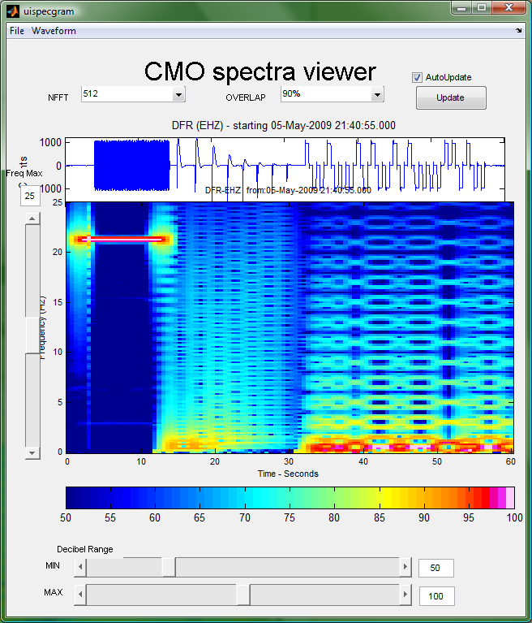
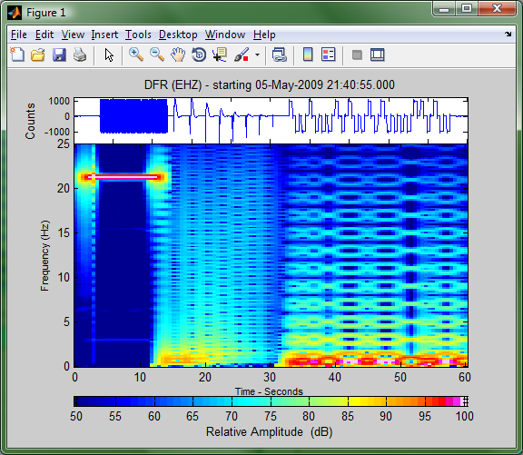

uispecgram is an interactive tool that allows you to create and modify spectrograms. The completed spectrogram may then be printed or exported. Also, the spectralobject settings that are generated through this utility can be saved, so that the same style spectrogram can be created in the future.
calls to uispecgram require a waveform object. An example .mat file, containing two calibration pulses can be found here. The example calibrations are in two variables, called dfr_calib and red_calib.
For the following example, we will use dfr_calib.
>> load calib_examples.mat dfr_calib
>>dfr_calib
dfr_calib =
station: DFR network: AV
channel: EHZ location: --
start: 05-May-2009 21:40:55.000
duration(00:01:00.010)
data: 6001 samples
freq: 100.000000 Hz
units: Counts
With misc fields...
* HISTORY: [1x2] cell object
>> uispecgram(dfr_calib); %bring up the following interactive window
Parts of the spectra viewer window

- File menu: choose specgram2 to replot the current figure in a new window so that it can be saved or printed
- Waveform menu: currently disabled
- Number of samples in the FFT.
- Percent overlap, or time between samples
- Update: Choose AutoUpdate to have the figure redraw as each option is selected. Otherwise, make desired changes and then click the update button.
- Waveform Wiggles display
- Spectrogram window
- Maximum displayed frequency slider
- Sliders for the max and min decible range
- Colorbar showing the color value for each dB
The values can then be modified to suit your needs. Here, I've changed all the values somewhat to make the spectrogram pop

When you choose to plot it by clicking specgram2 from the file menu, a new window will appear.

Also, the spectralobject that was needed to create the figure will be displayed in the main matlab window:
ans =
nfft: 512
over: 460.8
freqmax: 25
dBlims: [50 100]
this can then be used to create your own spectralobject in the future:
s = spectralobject(512, 460.8, 25, [50 100])